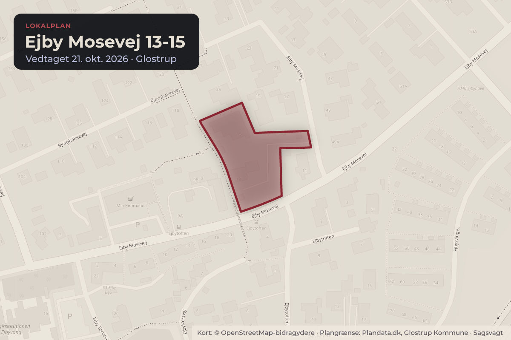
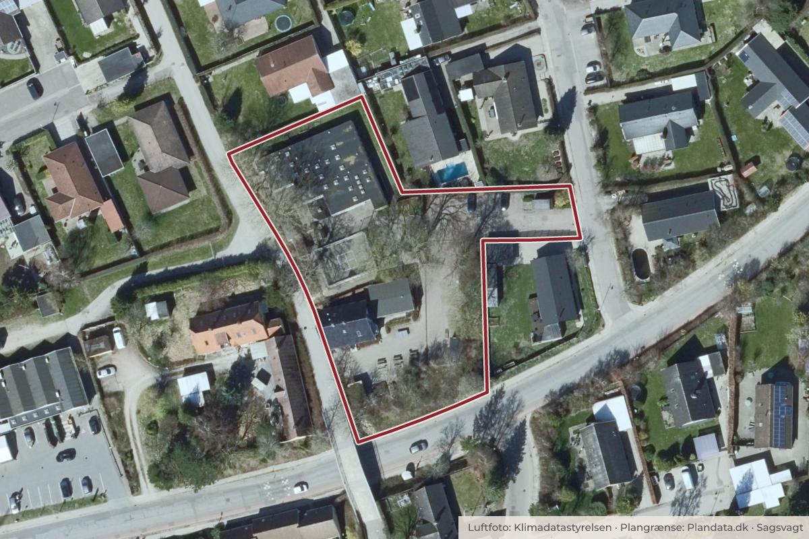

Besluttet 8. oktober, Økonomiudvalget, Glostrup
Endelig vedtagelse af Lokalplan EL43 for Ejby Mosevej 13-15
Lokalplan EL43 for Ejby Mosevej 13-15 fremlægges til kommunalbestyrelsens endelige vedtagelse. Lokalplanen muliggør ændring af grundens anvendelse fra institution til tæt-lav boligbebyggelse.
BoligerByggeri og lokalplanerSkoler og børn

Kort: © OpenStreetMap-bidragydere. Plangrænse: Plandata.dk, Glostrup Kommune.

Kort fortalt
- Forslaget
- Forslag til Lokalplan EL43 for Ejby Mosevej 13-15 vedtages endeligt med de foreslåede ændringer.
- Hvem
- Økonomiudvalget, Glostrup Kommune
- Hvornår
- Torsdag 8. oktober 2026
- Status
- Besluttet. Indstillingen anbefales godkendt.
Læs hele sagen Kommunens egen tekst
Sagsfremstilling
Kommunalbestyrelsen besluttede på mødet den 24. juni 2026 at sende forslag til Lokalplan EL43 for Ejby Mosevej 13-15 i offentlig høring.
Lokalplanen omfatter de to kommunale ejendomme Ejby Mosevej 13 og 15 matr.nr. 11ad, Hvissinge By, Glostrup
Lokalplan EL43 giver mulighed for opførsel tæt-lav boligbebyggelse rækkehuse af varierende størrelser i 1-1½ etage med en maksimal bygningshøjde på 8,5 m og en bebyggelsesprocent på 35. Lokalplanen fastsætter, at minimum halvdelen af boligerne skal opføres i ét-plan med en størrelse på 80-100 m2 og en gennemsnitsstørrelse på 90 m2, mens den samlede gennemsnitsstørrelse for boligerne inden for lokalplanområdet skal være minimum 100 m2.
Lokalplanen fastsætter derudover, at rækkehusene skal etableres omkring et centralt fællesareal og med egen privat have, ligesom den udpeger en række træer og et beplantningsbælte som bevaringsværdige.
Planen har været i høring i 10 uger fra den 26. juni til den 4. september 2026. Ved høringsfristens udløb var der kommet 6 høringssvar, som er samlet i bilag 1 og refereret og kommenteret i bilag 2. Høringssvarene omhandler primært emnerne trafikale forhold og nabogener fra indblik og aktivitet mod tilstødende haver. Derudover er der høringssvar om mulighed for fortidsfund og tilgængelighed. Derudover er høringssvarene overordnet positive for lokalplanens tilgang til de nye boliger på grunden.
På baggrund af de modtagne høringssvar foreslår administrationen følgende ændringer til Lokalplan EL43:
• At hegn i skel mod nabomatrikler med åben-lav boligbebyggelse kan etableres som fast hegn i naturmaterialer, hvis dette kan forventes dækket af levende hegn.
• En tilføjelse om opmærksomhed på spor efter middelalderlig bebyggelse ved jordarbejder.
• At der skal sikres tilgængelighed i terræn til boligers primære indgange.
• At høje vinduer i gavle, der vender mod nabohaver forbydes i en afstand af 15 m til haven.
Lokalplan EL43 har været i offentlig høring sammen med beslutningen om ikke at udføre en miljøvurdering af lokalplanen. Der er ikke modtaget bemærkninger til denne beslutning.
Lokalplan EL er vedhæftet i endelig udgave.
Økonomi
Sagen har i sig selv ikke bevillingsmæssige konsekvenser, men ny lokalplan er en forudsætning for senere salg af arealet.
Indstilling
Center for Miljø og Teknik indstiller:
• at forslag til Lokalplan EL43 for Ejby Mosevej 13-15 vedtages endeligt med de foreslåede ændringer.
Behandling i Miljø-, Teknik- og Ejendomsudvalget 1. oktober 2026
Indstillingen anbefales godkendt.
Beslutning
Indstillingen anbefales godkendt.
Fraværende:
Dan Kornbek Christiansen
Bilag
Kilde: Glostrup Kommune, Økonomiudvalget, referat fra mødet torsdag 8. oktober 2026, punkt 11. Læs den originale sag hos kommunen.